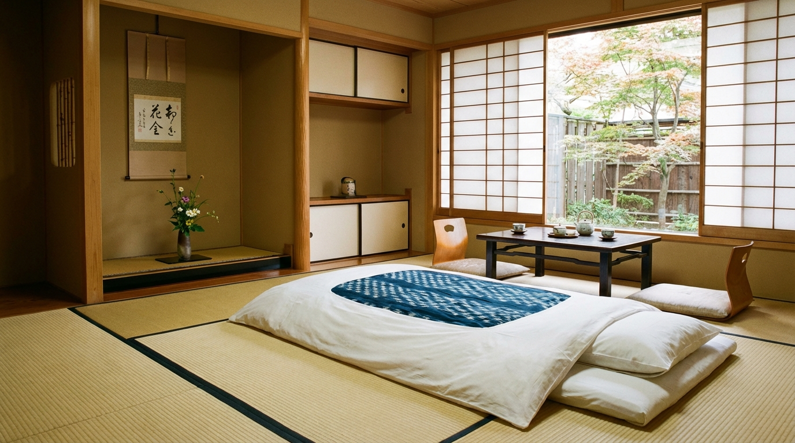
特別室和室特別室 Japanese Suite
12.5畳の本間に次の間を備えた、最上級の和空間。 檜の香る専用露天風呂から、四季の庭を独り占め。
- 12.5畳 + 次の間 6畳
- 専用露天風呂付
- 庭園ビュー
- 定員 2〜4名
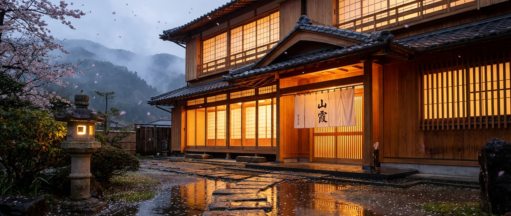
禅の静寂に、身を委ねる
Surrender to Zen stillness
花月が大切にしているのは、「間」の美学。余白のなかに宿る、静かな豊かさ。 数寄屋造りの空間には、自然の息吹が溶け込み、四季の移ろいが穏やかに流れます。
At Kagetsu, we cherish ma — the beauty of negative space. Within stillness, you will discover a quiet abundance. Our sukiya-style architecture breathes with nature, where the gentle passage of four seasons becomes your companion.
創業以来百余年、変わらぬおもてなしの心で、お客様をお迎えいたします。 日常を離れ、ただ在ることの贅沢を、どうぞお愉しみください。
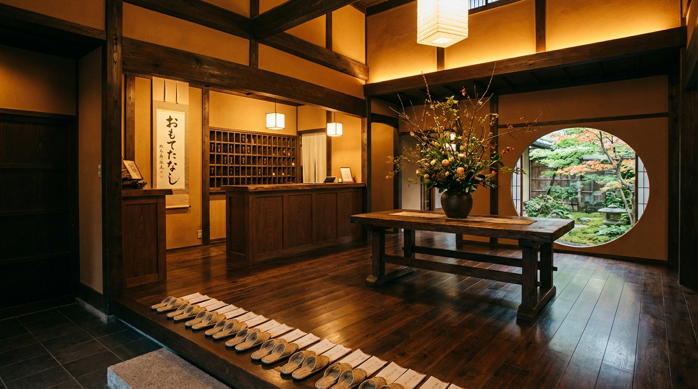
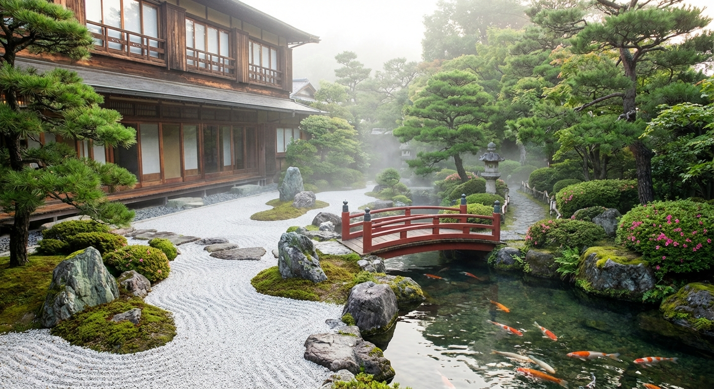
畳の香り、障子越しの光、庭を渡る風。
すべてが、ここだけの静寂を紡ぎます。

特別室12.5畳の本間に次の間を備えた、最上級の和空間。 檜の香る専用露天風呂から、四季の庭を独り占め。
純和風の趣を愉しむ、落ち着いた10畳の客室。 窓の向こうに広がる山並みが、心を解きほぐします。
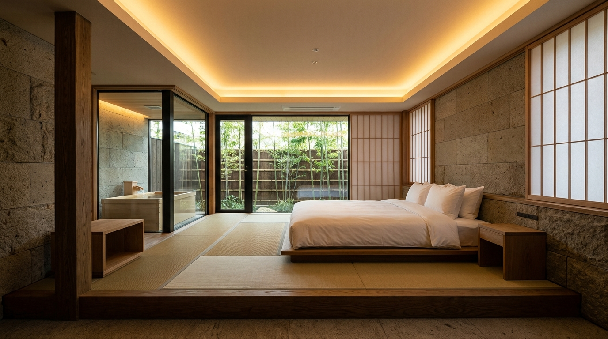
畳の間とベッドルームが調和する、現代的な和の空間。 シモンズ製ベッドで、くつろぎのひとときを。
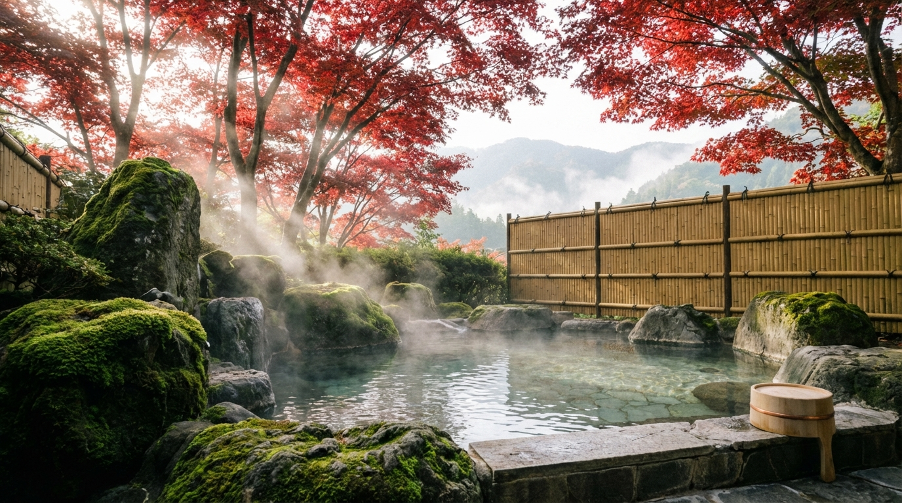
山々に抱かれた露天風呂。夜は満天の星が湯面に映り、 朝は霧に包まれた幻想的な景色が広がります。 自家源泉かけ流しの湯が、旅の疲れを芯から癒します。
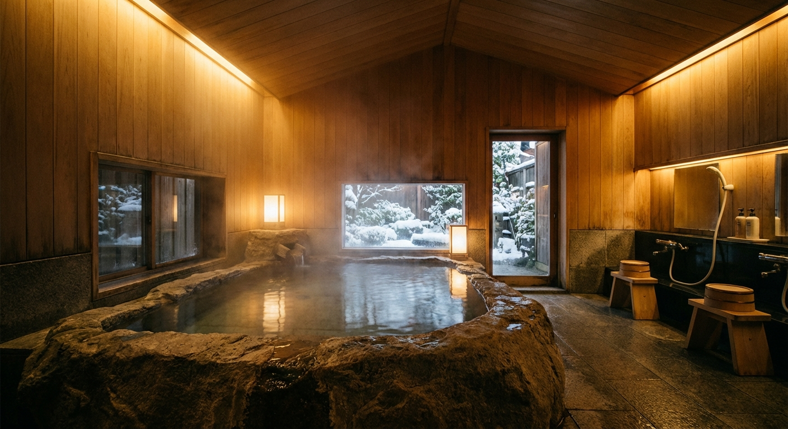
総檜造りの大浴場。木の温もりに包まれながら、 源泉の恵みをゆっくりとお愉しみいただけます。 泉質はナトリウム塩化物泉、美肌の湯として名高い名湯です。
器に盛られた、季節の物語。
一皿一皿に、料理長の想いが宿ります。
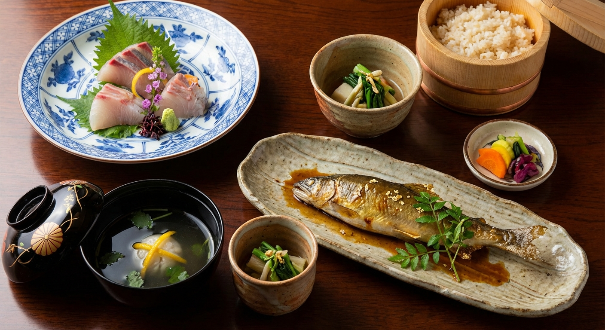
地元の山海の幸を中心に、月替わりで仕立てる本格懐石。 先付から水菓子まで、全十二品。器との調和も、ひとつの味わいです。
炊きたての土鍋ご飯、焼き魚、出汁巻き卵。 朝の光とともにいただく和朝食は、一日の始まりを穏やかに彩ります。 地元農家から届く野菜と、自家製の漬物をご堪能ください。
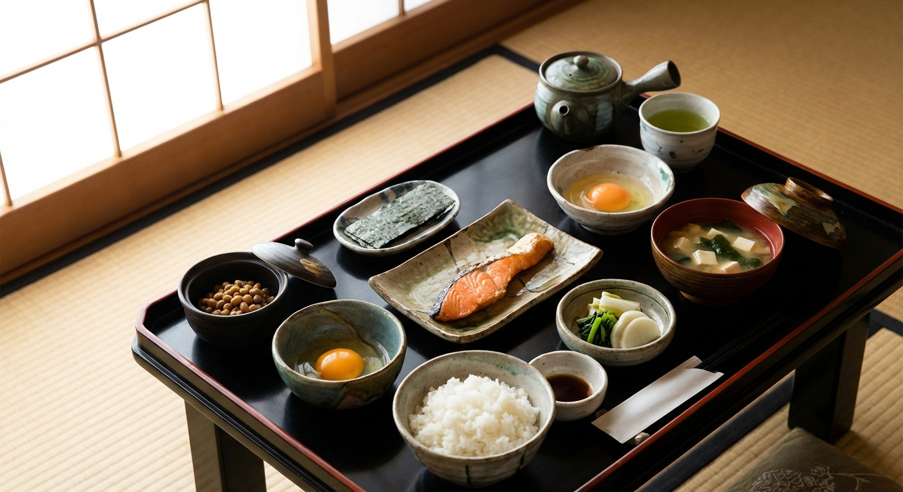
玄関にて、抹茶と季節の和菓子でお迎えいたします。仲居がお部屋までご案内。
Welcome with matcha and seasonal wagashi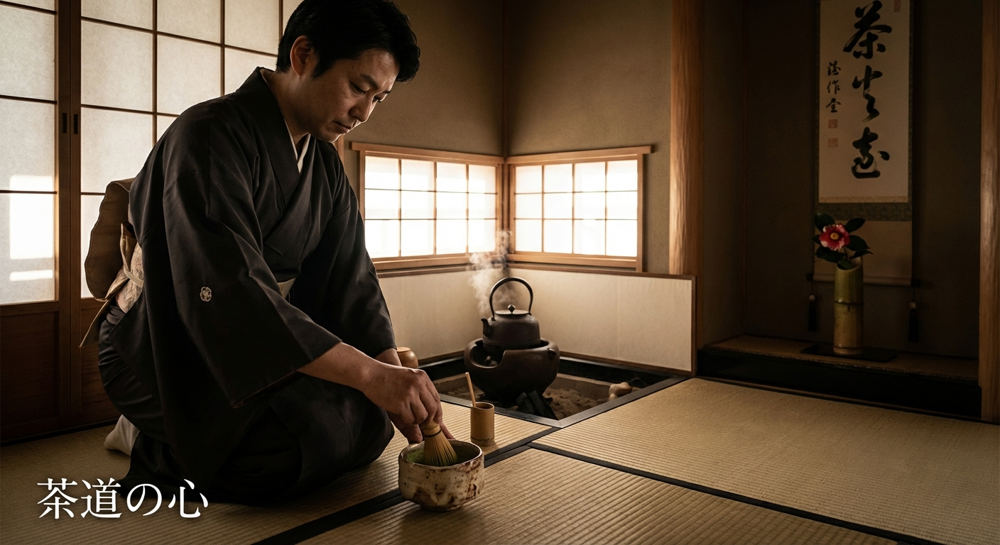
茶室「清風庵」にて、裏千家の作法による茶道体験。一碗のお茶に、心を澄ませるひととき。
Tea ceremony experience at Seifuan tearoom池泉回遊式庭園を、ゆるりと散策。苔むした石灯籠、水琴窟の音色に耳を傾けて。
Stroll through the kaiyushiki garden個室料亭にて、月替わりの懐石を。地酒とともに、旬の味覚をご堪能ください。
Kaiseki dinner in a private dining room星空を仰ぎながら露天風呂へ。源泉かけ流しの湯で、一日の疲れを流しましょう。
Evening bath under the stars朝風呂のあとは、土鍋で炊き上げたご飯と、心づくしの和朝食を。
Morning bath followed by traditional breakfast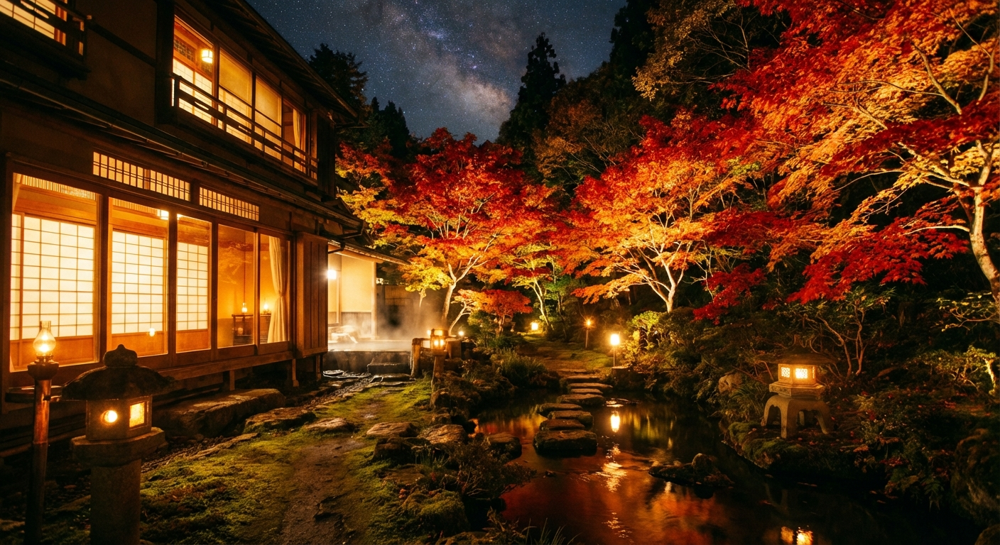
夜景 Night View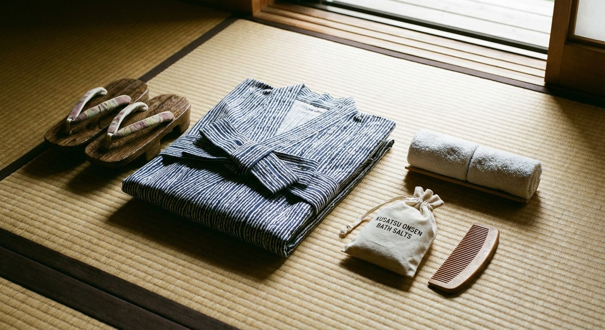
設 Amenities3月 – 5月
桜が庭園を淡く染め上げ、山菜が食卓を彩る春。 花見露天で湯と花の競演をお愉しみください。
6月 – 8月
蛍が舞う初夏の夕べ、清流のせせらぎ。 鮎の塩焼きと冷酒で涼を感じるひととき。
9月 – 11月
紅葉が錦を織りなす秋。松茸、栗、秋鮭。 実りの季節の懐石は、一年で最も華やかです。
12月 – 2月
雪見露天の静寂。囲炉裏端で味わう、 蟹と河豚の贅。白銀の世界に、湯けむりが立ちのぼる。
JR某線 温泉駅下車、送迎バスにて約10分
※ご到着時刻をお知らせください。駅までお迎えにあがります。
某自動車道 温泉ICより約15分
※駐車場30台（無料）
某空港よりレンタカーまたはバスにて約60分
花月での滞在をご希望のお客様は、お電話またはオンラインにてご予約を承ります。 ご不明な点がございましたら、お気軽にお問い合わせください。
受付時間: 9:00〜20:00（年中無休）